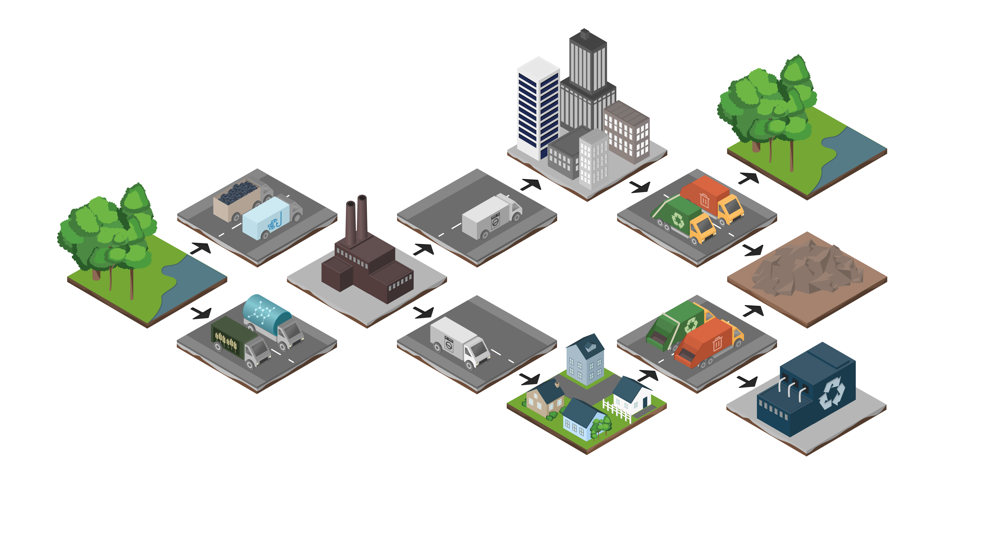
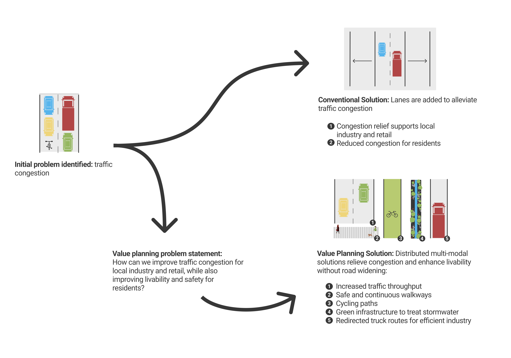
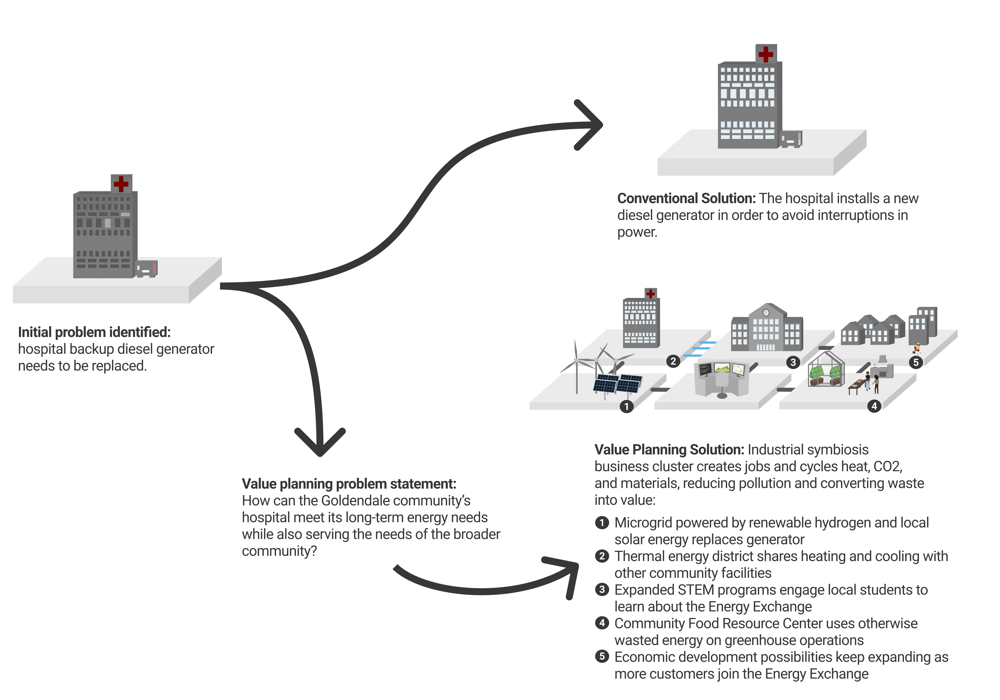

The Center for Sustainable Infrastructure
In the spring and summer of 2021, I intered at the Center for Sustainable Infrastructrue in Olympia, Washington. These are graphics I designed to illustrate the industrial systems and problem-solving approaches they were developing. Check out their 2021 Impact Report to see my published work.
Industrial Symbiosis
An industrial symbiosis model imagines a system in which byproducts from one industrial process can be reused as raw materials in another, rather than treated as waste.
Value Planning
These diagrams use case studies to demonstrate the impact that a "value-planning" approach can have on a project. Value planning involves local communties in thinking expansively about a project and addressing the root.



Renewable Hydrogen